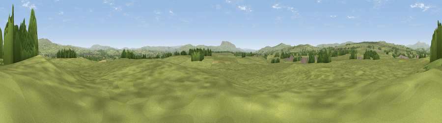

Hunters Hill
#18640 in England · top 43% of its area beats it · near WigglesworthWhere it is
The exact computed spot (SD 80828 55201). Click the marker for map links.
The view, rendered

A 360° render of this exact spot computed from the terrain model, tree cover and land cover — summer colours, afternoon light, calibrated against photographs of famous viewpoints. Real trees, hedges and buildings will differ in detail.
The panorama
Grey silhouette: terrain skyline in each direction (720 bearings, Earth curvature and refraction included). Dashed green: skyline with trees (+15 m) and buildings (+8 m) as obstacles. Blue strip: how far the ground is visible on each bearing.
Where the view opens
Wedge length = distance to the farthest visible ground on that bearing (vegetation-aware). Rings at 10, 25 and 50 km.
What fills the view
92% grassland · 6% woodland · 2% cropland ·
Angular shares of the visible panorama (visual magnitude), not map area. Landscape diversity 0.14 (0–1 Shannon).
Key numbers
More beautiful places nearby
The staircase of upgrades: each row has a higher view potential than everything closer. Driving times are estimates from straight-line distance, calibrated against real road routing — check an actual route before setting out.
| Place | Direction | Drive | Score |
|---|---|---|---|
| Viewpoint near Tosside | WSW · 5 km | ~11 min | 66.2 |
| Whelpstone Crag | NW · 6 km | ~13 min | 71.7 |
| Viewpoint near Settle | NNE · 9 km | ~17 min | 73.2 |
| Warrendale Knotts | NNE · 9 km | ~18 min | 73.7 |
| Rye Loaf Hill | NE · 10 km | ~19 min | 73.9 |
| Kirkby Fell | NE · 11 km | ~20 min | 74.5 |
| Viewpoint near Barley | S · 13 km | ~24 min | 76.3 |
| Pendle Hill | S · 14 km | ~25 min | 76.5 |
53.99249, -2.29391 · source: osm peak · position refined by local search. Computed location — check access rights before visiting.